긴 기록은 왜 비쌀까요?
영상은 결과부터 보여 줘요. 화면 가운데 노란 메모가 이 논문이 말하는 '메모 한 장'이에요. 원래 과제(이슈 #4821 수정), 지금 하는 일(parser.py 경계 조건 확인), 다음 할 일(테스트 2개 다시 실행), 관련 파일 경로가 한 줄씩 적혀 있어요. 오른쪽 아래 카드는 기록을 전부 쌓았을 때와 메모로 갈아 끼웠을 때의 SWE-bench Verified 점수예요.
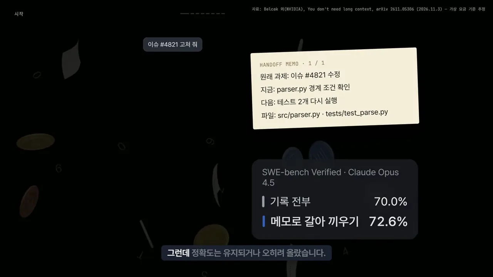
논문은 엔비디아 연구진 12명이 쓴 「You don't need long context」(arXiv 2611.05306)예요. 화면 아래에 100만 토큰을 지우고 16,000으로 바꾼 줄이 있어요. 100만 토큰 창을 두고 경쟁하는 흐름과 정반대로, 짧은 창이면 된다는 주장이에요.
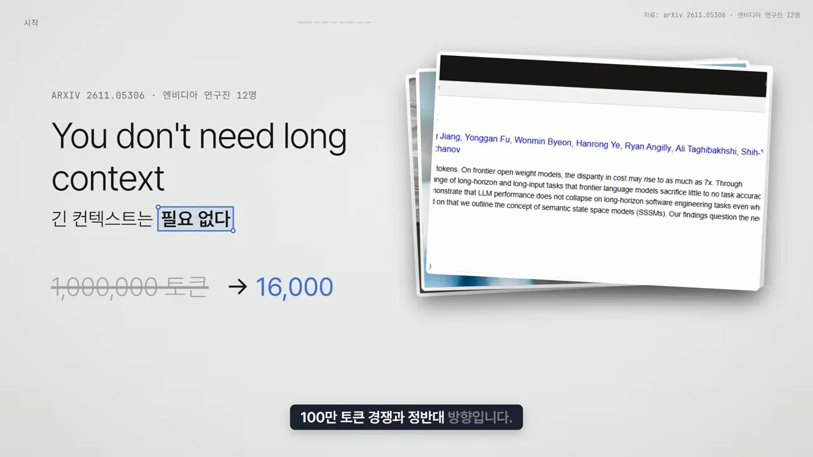
숨은 비용은 KV 캐시예요
모델은 새 토큰 하나를 만들 때마다 앞의 기록 전부를 다시 참조해요. 그 기록이 GPU 메모리에 KV(Key-Value) 캐시로 남아요. 기록이 길수록 캐시가 메모리를 더 차지하고, 그만큼 한 GPU가 동시에 받을 수 있는 요청이 줄어요.
엔비디아는 H100에서 이걸 직접 쟀어요. 왼쪽 막대가 창을 256K로 열었을 때 16K보다 토큰 하나가 몇 배 비싼지예요. GLM(General Language Model) 5.2가 약 4배, Kimi K2.6이 약 6배, Qwen 3 Coder Next가 약 7배예요. 오른쪽 그래프는 Kimi K2.6에서 창이 커질수록 100만 출력 토큰당 비용이 가파르게 오르는 모습이에요.
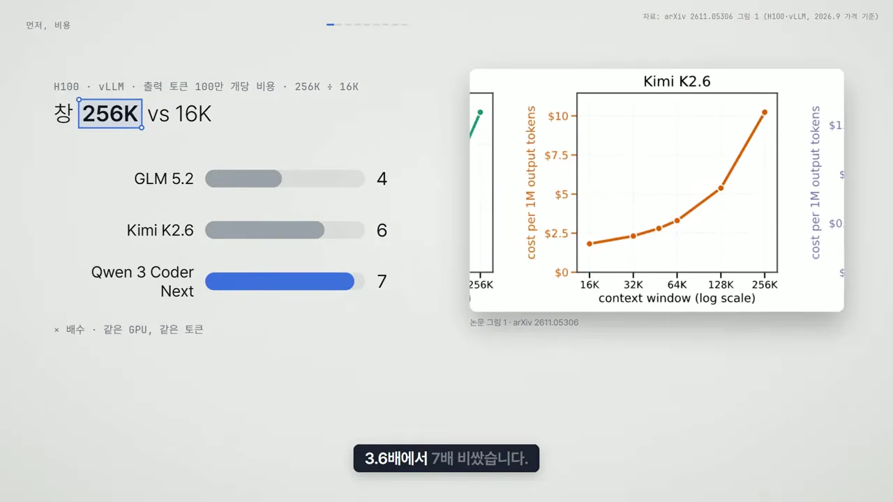
그런데 API 요금표에서는 이 차이가 안 보여요. 두 카드처럼 16K 요청이든 256K 요청이든 100만 토큰당 값이 같아요. 차이는 공급사의 GPU 비용 안으로 숨어 버려요.
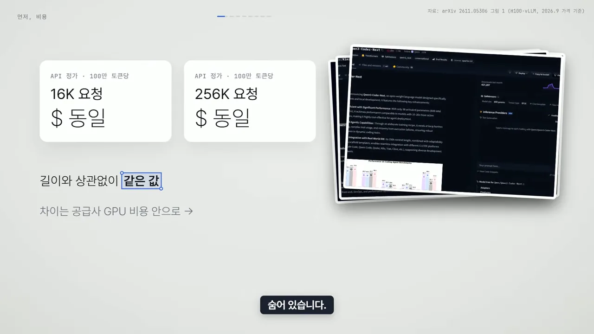
장비를 직접 돌리면 바로 느껴져요. DGX Spark(128GB 통합 메모리)에서 잰 결과, 뒤쪽 토큰 하나를 만드는 시간이 앞쪽 토큰의 약 2배였어요. 오른쪽 그래프에서 창이 커질수록 처리량이 꺾여 내려가는 게 보여요. 에이전트가 오래 일할수록 점점 느려지는 이유예요.
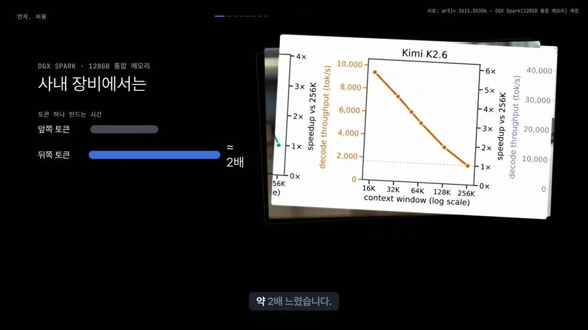
기록 대신 메모로 갈아 끼운 실험
연구진은 Claude Opus 4.5와 GPT 5.6 Sol 두 모델에게 13개 과제를 맡겼어요. 화면 위쪽 태그가 과제 목록이에요. 실제 깃허브 이슈 500개를 고치는 SWE-bench Verified, 터미널 작업을 푸는 Terminal-Bench 2.1, 긴 문서를 다루는 LongBench v2, AA-LCR, RULER 등이 들어 있어요.
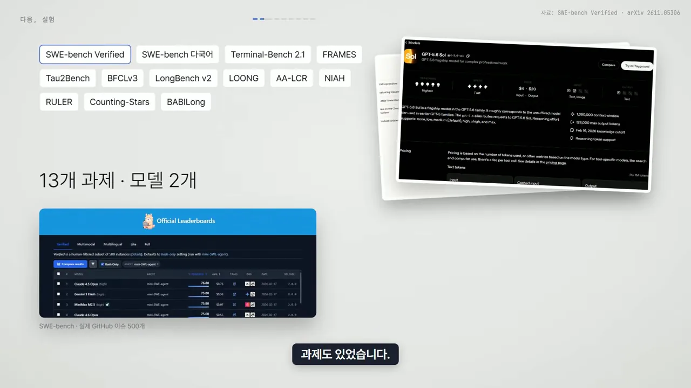
비교한 건 기록을 다루는 방식 셋이에요. 그래프의 세로축은 모델이 한 번에 보는 기록 길이예요. 빨간 선(끝까지 쌓기)은 계속 올라가요. 지금 대부분의 에이전트가 이 방식이에요. 가운데 파란 톱니(한도에서 메모)는 한도에 닿을 때마다 메모를 쓰고 새로 시작해서 뚝 떨어져요. 맨 아래(행동마다 메모)는 행동 하나마다 메모를 고쳐 써서 낮게 유지돼요.
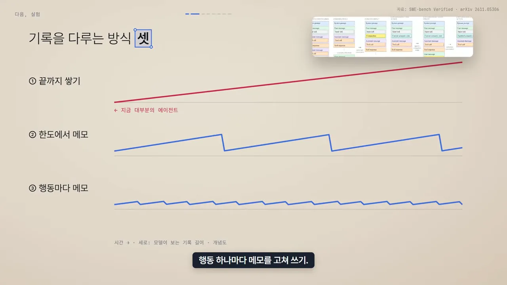
코딩: 한도를 줄여도 버텼어요
카드 세 줄을 보면 돼요. 기록 전부를 쌓았을 때 70.0%, 24K 한도에서 메모를 쓰면 74.8%, 가장 빡빡한 16K 한도에서는 68.8%예요. 영상 나레이션은 "16,000 토큰까지 줄였고 74.8%로 올랐다"고 이어서 말하는데, 74.8%는 24K 한도의 값이에요. 16K에서는 1.2점 내려갔어요.
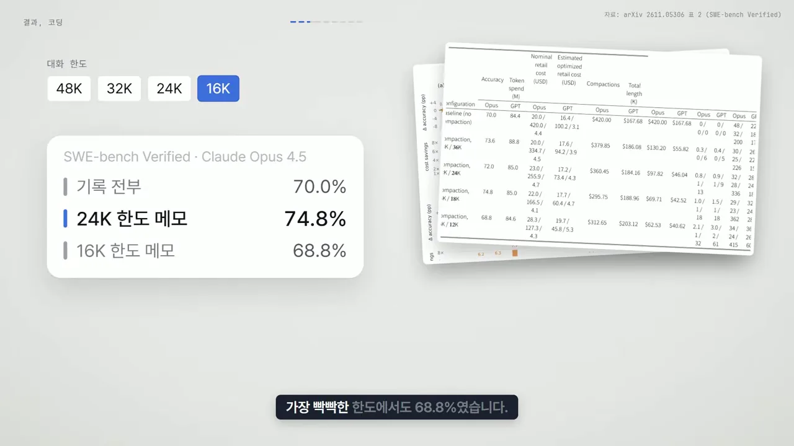
22개 한도 설정 가운데 2점 넘게 떨어진 경우는 모델마다 다섯 개 이하였어요. 더 과감하게, 행동 하나마다 기록을 버리고 메모만 남겨도 오퍼스는 SWE-bench에서 70.2%를 지켰어요. 매번 새 직원이 인수인계서 한 장만 읽고 일하는 셈이에요.
터미널 과제도 올랐어요. 카드의 숫자는 Terminal-Bench 2.1에서 행동마다 메모를 썼을 때 오퍼스가 47.2%에서 51.6%가 된 거예요. 나레이션과 논문 표는 51.8%라서, 카드 쪽 숫자가 살짝 어긋나 있어요. 오른쪽 배경은 Terminal-Bench 4.0 순위표 화면이고, 실험에 쓴 버전은 2.1이에요.
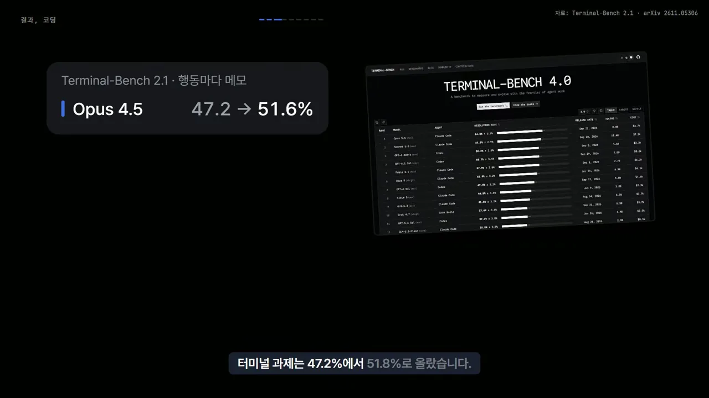
GPT는 행동마다 메모를 썼을 때 두 과제에서 2~3점쯤 내려갔어요. 대신 한 번에 보는 기록이 확 줄었어요. 최대치는 20만 토큰에서 37,000토큰으로, 중간값은 7,000~9,000토큰이었어요.
| 과제 · 모델 | 기록 전부 | 메모 사용 | 조건 |
|---|---|---|---|
| SWE-bench Verified · 오퍼스 | 70.0% | 74.8% | 24K 한도에서 메모 |
| SWE-bench Verified · 오퍼스 | 70.0% | 68.8% | 16K 한도에서 메모 |
| SWE-bench Verified · 오퍼스 | 70.0% | 70.2% | 행동마다 메모 |
| Terminal-Bench 2.1 · 오퍼스 | 47.2% | 51.8% | 행동마다 메모 |
| 두 과제 · GPT | 2~3점 하락 | 행동마다 메모 | |
긴 문서: 통째로 넣지 말고 골라 읽어요
긴 문서에서는 차이가 더 컸어요. 문서를 프롬프트에 통째로 붙이지 않고 파일로 둬요. 화면의 터미널처럼 모델이 grep으로 단어를 찾고, 나온 줄 번호 주변 36줄만 읽어요. 두꺼운 매뉴얼에서 색인을 보고 그쪽만 펴는 것과 같아요.
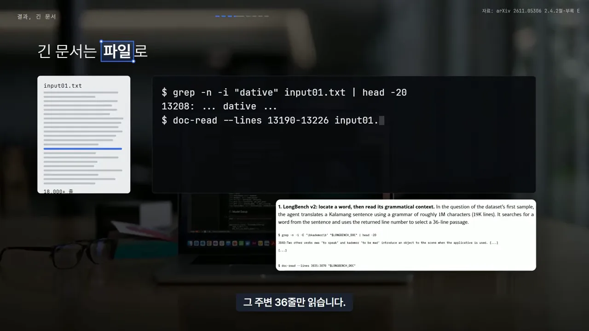
막대 두 개가 결과예요. 여러 문서를 엮어 답하는 AA-LCR에서 오퍼스는 통째로 넣을 때 65%, 골라 읽을 때 84%였어요. 긴 문서 속 정보 찾기는 62%에서 96%가 됐어요.
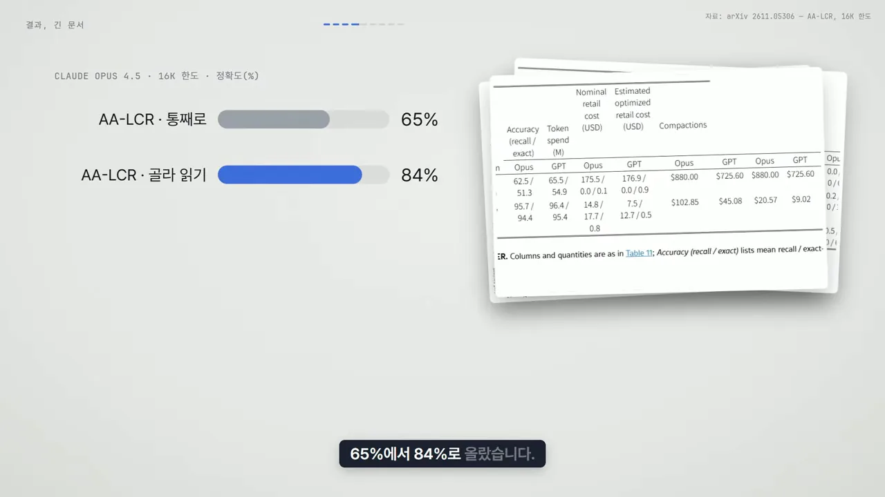
왜 그럴까요? 왼쪽 U자 곡선은 Lost in the Middle 현상이에요. 문서 앞과 끝에 있는 정보는 잘 찾지만, 가운데 있는 정보는 놓치기 쉬워요. 오른쪽 그래프도 답이 든 문서가 가운데로 갈수록 정확도가 떨어지는 모양이에요. 골라 읽으면 애초에 놓칠 '중간'이 줄어요. 이렇게 해서 추정 비용은 최대 233배 줄었어요.
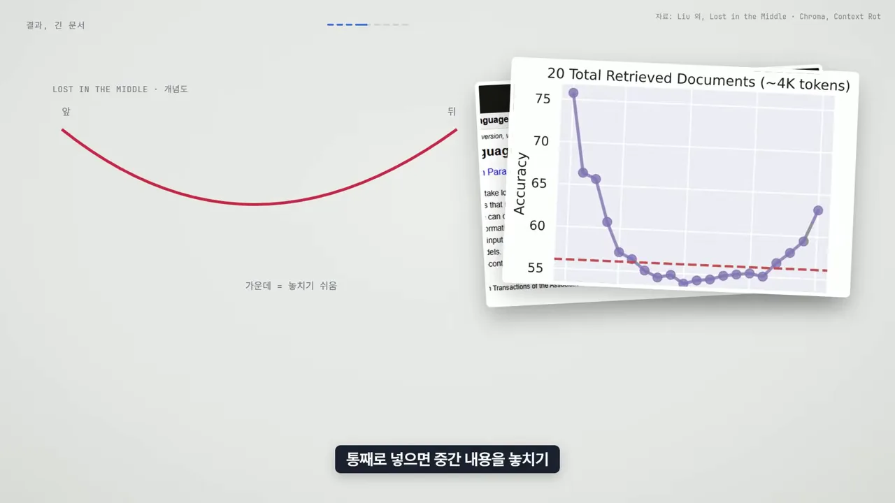
메모에 적을 세 칸과 조심할 점
요약 말고 인수인계서
그럼 메모엔 무엇을 적어야 할까요? 연구진이 먼저 해 본 건 요약이었는데, 효과가 떨어졌어요. 요약은 모든 사실을 같은 무게로 다루고, 여러 번 반복한 일을 실제보다 부풀려요. 메모는 다음 담당자에게 넘기는 인수인계서처럼 써야 해요.
잘 된 메모는 세 칸이었어요. 화면 왼쪽 세 상자가 그 칸이에요.
- 원래 과제 — 처음 받은 지시를 거의 그대로 옮겨요.
- 지금 하는 일 — 현재 작업, 의도, 다음 단계를 적어요.
- 앞으로 필요한 자료 — 쪼갠 계획, 완료 조건, 파일 위치를 남겨요.
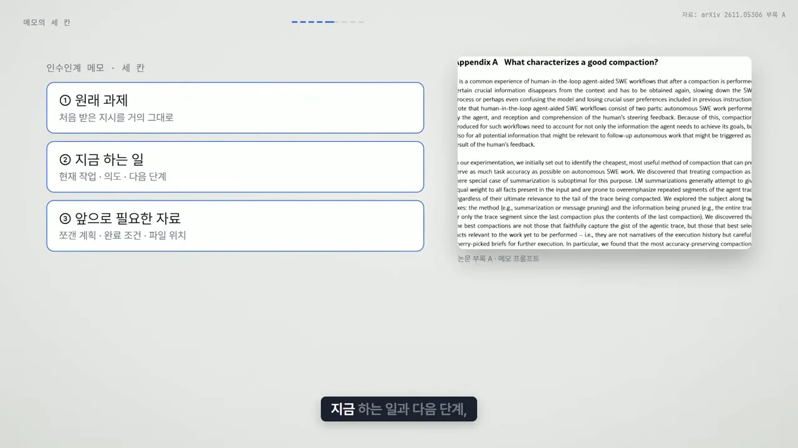
이 세 칸은 Claude Code나 Codex의 압축 지침에 그대로 옮길 수 있어요. 오른쪽 검은 상자가 예시예요. CLAUDE.md나 AGENTS.md에 '압축할 때 남길 것' 제목 아래 원래 과제 원문, 지금 작업과 다음 단계, 완료 조건과 파일 경로를 적어 두는 식이에요.
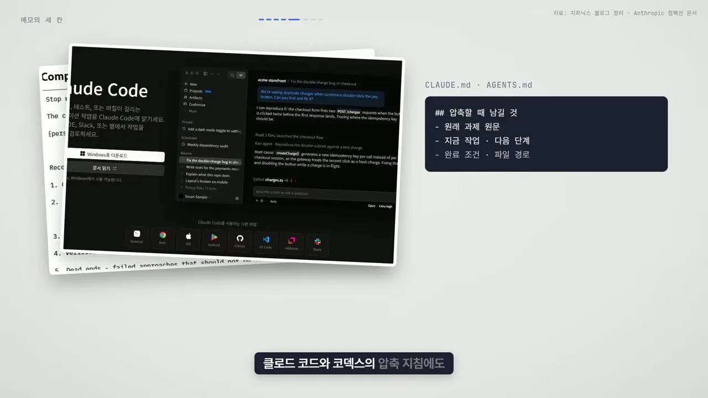
조심할 점
메모는 정보를 잃어요. 동전 던지기 결과를 계속 묻는 과제라면, 메모 한도가 정해져 있는 한 언젠가는 앞 결과를 잃을 수밖에 없어요. 그래서 전체 기록은 파일로 따로 남기고, 필요할 때 찾아 읽게 해요.
규칙도 사라질 수 있어요. 막대 세 개가 다른 연구(The Compaction Cliff)의 결과예요. Claude Code의 /compact 프롬프트로 Sonnet 4.6이 압축했을 때, 안전 규칙이 1번 뒤 53%, 5번 뒤 10%만 남았어요. 꼭 지켜야 할 규칙은 메모가 아니라 지침 파일에 둬야 해요.
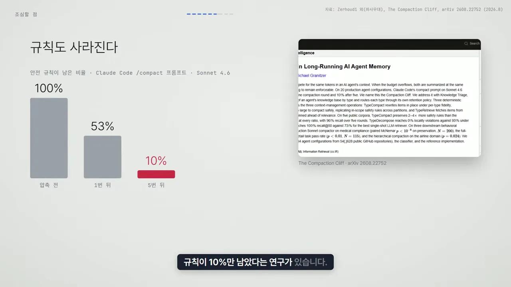
233배도 그대로 믿으면 안 돼요. 오른쪽 상자가 가정이에요. 256K 요청은 정가 그대로, 16K 요청은 정가의 0.2배로 받는다고 놓고 계산한 추정치예요. 지금 공급사들은 길이와 상관없이 같은 값을 받으니, 이 할인은 아직 현실이 아니에요.
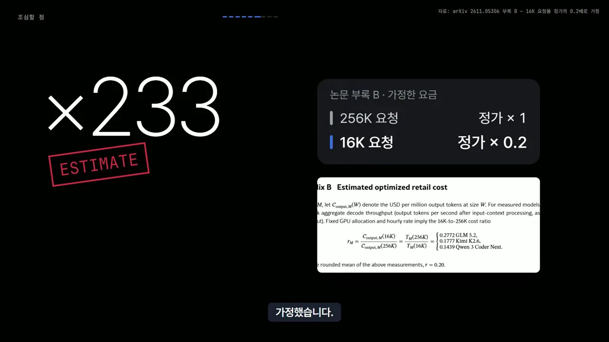
지금 정가로 계산하면 결과가 갈려요. 왼쪽 카드의 오퍼스는 $420에서 $296로 30% 싸졌어요. 오른쪽 GPT 5.6 Sol은 $168에서 $189로 13% 비싸졌어요. 메모를 쓰느라 출력 토큰이 310만에서 470만 개로 늘었기 때문이에요.
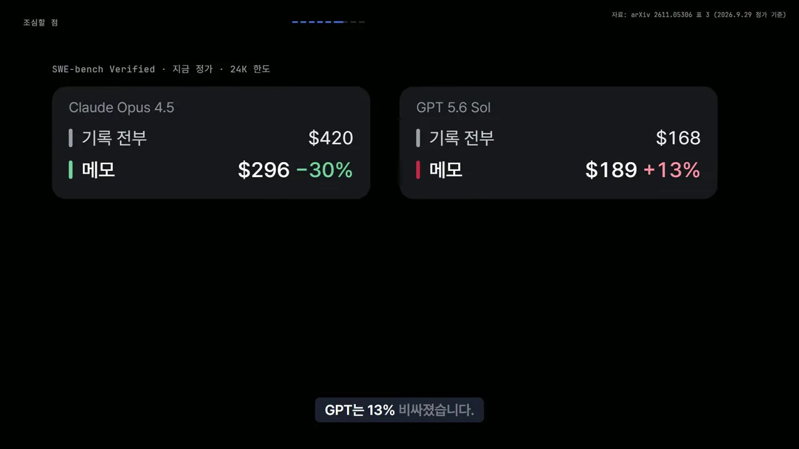
작은 모델에는 독이 될 수도 있어요. 공개 모델 Qwen 3 Coder Next는 SWE-bench에서 16K 한도로 압축하자 53%에서 3.6%로 무너졌어요. 화면 설명처럼 출력이 장황해서, 압축과 압축 사이에 일을 거의 못 했어요. 왼쪽 아래 노란 줄은 검색·추론 과제(FRAMES)에서도 압축하면 최대 3.7점 떨어졌다는 표시예요.
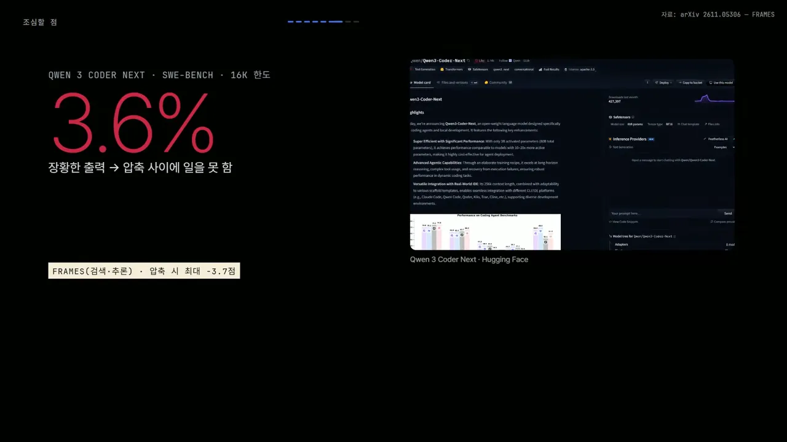
한 걸음 더: 의미 상태 공간 모델
연구진은 더 나가요. 그림의 세 상자가 도는 순서예요. 현재 상태를 문장으로 읽고(상태 문장 읽기), 행동 하나를 하고, 상태를 다시 고쳐 써요. 이런 모델을 의미 상태 공간 모델이라고 불렀어요. 그러면서 "왜 긴 기록을 다루도록 학습시키나?"라고 되묻죠. 다만 아직은 제안 단계예요.
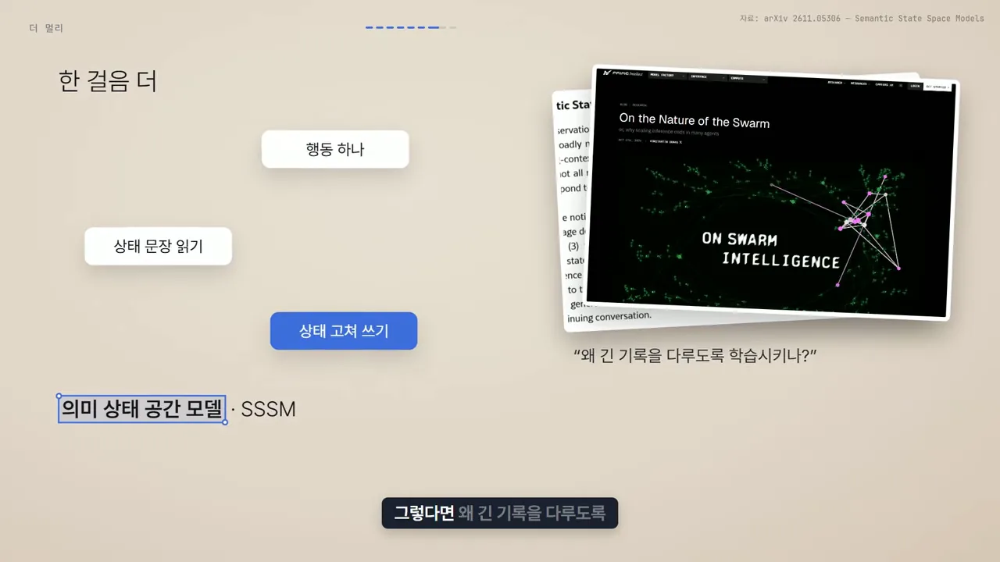
정리: 쌓지 말고 고쳐 써요
이득이 가장 큰 곳은 GPU를 직접 돌리는 쪽이에요. 막대 두 개처럼 같은 GPU에서 16K 창은 256K 창보다 토큰을 3.6~7배 더 만들어요.
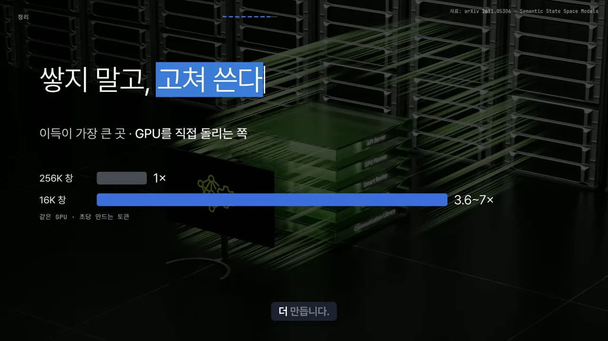
창을 16K~32K로 줄이면 KV 캐시가 비운 메모리만큼(그림의 파란 칸) 동시 요청을 더 받을 수 있어요. 그래서 서버 규모도 노란 상자의 식처럼 '동시 요청 수 × 실제 컨텍스트 길이'로 잡으면 돼요. 영상은 경쟁이 창의 크기에서 메모의 질로 옮겨 간다고 말하고, 우리 에이전트의 실제 컨텍스트 길이(중간값과 최댓값)부터 재 보라고 권하며 끝나요.
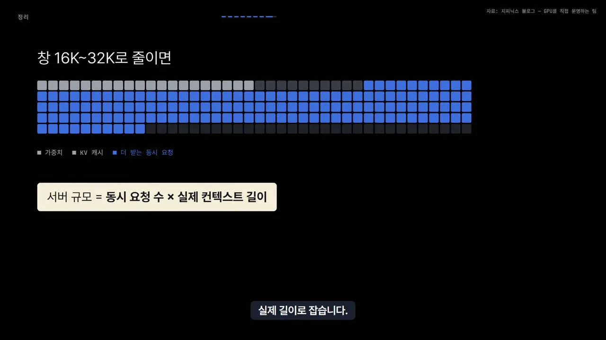